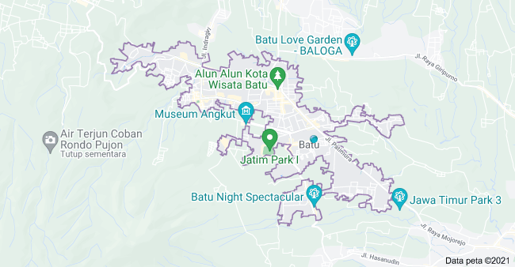

Gunakan LiburanMu Di #InfoBatu
Kota Batu adalah kota yang terletak di dataran tinggi di provinsi Jawa Timur. Kota ini terletak 800 meter dari permukaan laut dan memiliki suhu yang dingin dan sejuk sekitar 17-25,6 derajat Celcius, dikarenakan dikelilingi oleh pegunungan. Kota Batu merupakan kota dengan sejuta keindahan, dimana potensi utama di dapat dari penghasil buah dan sayuran. Ditambahlah lagi, pesona alam seperti pegunungan dan bukit di sekitar kota ini menjadi potensi pariwisata yang sering dikunjungi. Terdapat beberapa obyek wisata yang tak pernah sepi dikunjungi oleh para wisatawan Batu, seperti Jatim Park, Selecta, Songgoriti, Coban Rondo, Gunung Panderman, Gunung Arjuno, Gunung Welirang dan banyak lagi. Sebagai sarana pelengkap semua obyek wisata di Batu, terdapat pula beberapa fasilitas pendukung yang bisa dengan mudah di dapat seperti vila, restaurant dan hotel yang semuanya menawarkan keindahan alam sebagai menu saat membuka jendela. Selain sebagai daerah tujuan wisata, Kota Batu juga memiliki ke khas an tersendiri dalam bidang seni, baik dalam bidang seni modern ataupun tradisional, seperti, Kuda Lumping, Campursari dan beberapa hasil ukir khas kota Batu dan Malang.
Pada gambar diatas adalah peta dari wilayah kota Batu. Kota Batu mempunyai banyak wisata. Jarak antar wisata tersebut tidak terlalu jauh. Hal ini cocok untuk traveler yang ingin menjelajahi wisata di satu wilayah dalam waktu yang singkat.
Jarak antar wisata tersebut hanya membutuhkan 20-60 menit saja selama kondisi dijalan tidak padat kendaraan. Kota Batu mengalami padat kendaraan ketika di hari libur,Karena banyak orang yang ingin berliburan keluarga dengan mengunjungi wisata yang diinginkan.
Wisata yang dimiliki oleh kota Batu diantaranya Batu Night Spectaculer atau yang disebut dengan BNS, Museum Angkut dimana wisata tersebut didalamnya terdapat museum-museum bersejarah, kemudian Jatim Park 1,2,3 dimana wisata tersebut mempunyai banyak wahana seperti roller coaster,rolling wahana dan masih banyak lagi,kemudian Alun-Alun Kota Batu
dimana wisata tersebut merupakan wisata icon yang berada di kota Batu. Tidak hanya wisata saja melainkan kuliner didalam wilayah kota Batu juga sangat beragam.
Jatim Park 1 Batu,Jawa Timur
Jawa Timur Park 1 atau biasa disebut sebagai Jatim Park 1 merupakan sebuah sarana rekreasi sekaligus belajar, letaknya di Jalan Kartika No 2 Kota Wisata Batu. Jatim Park 1 memiliki beberapa wahana permainan seperti kolam renang raksasa (dengan latar belakang patung Ken Dedes, Ken Arok, dan Mpu Gandring), spinning coaster, drop zone, 3D Ghost Haunter, dan lain-lain.
Beberapa fasilitas yang tersedia di Jatim Park 1 di antaranya: toko oleh-oleh atau souvenir, toilet, tempat ibadah, area parkir, rumah makan, hotel dan penginapan.
Ada beberapa kriteria wahana di Jatim Park 1, yakni antara lain :
Wahana Edukasi, Wahana Edukasi merupakan media pembelajaran yang menyenangkan bagi pelajar, karena selain bermain mereka juga mendapatkan pengetahuan seperti mengetahui tentang jaman prasejarah, etnik – etnik yang ada di Indonesia, keraton di nusantara, POS di masa lampau.
Wahana Anak, Setelah belajar anak – anak dapat bermain melepas lelah dengan permainan – permainan yang mengasyikan.Wahana Keluarga, Wahana ini sangat cocok dinikmati untuk keluarga karena nuansanya yang sangat mengasyikan.
Pastikan anda tidak memiliki penyakit jantung, phobia ketinggian, asma, dan lain – lain serta perhatikan instruksi dari petugas dengan baik saat akan menaiki wahana – wahana yang ada.
Regular,Senin – Kamis : Rp 60.000
Regular, Jumat – Minggu : Rp 80.000
Jam Buka : 08.30 – 16.30 WIB
Berikut adalah lokasi atau peta pada wisata Jatim Park 1,Kota Batu,JAWA TIMUR.
Klik Disini.
Taman Rekreasi Selecta Batu,Jawa Timur
Taman Selecta merupakan salah satu destinasi wisata favorit di kota Batu. Sensasi suasana udara sejuk dan panorama yang indah membuat pengunjung betah berlama lama di sini.
Lokasi Selecta Batu terletak di desa Tulungrejo, kecamatan Bumiaji, Kota Wisata Batu. Selecta Batu memiliki beberapa wahana favorit diantaranya ada taman bunga Selecta dan pemandian Selecta.
Taman Bunga Selecta memiliki luas sekitar 10 hektar dari total 18 hektar keseluruhan wisata. Di wahana taman Selecta setidaknya terdapat puluhan spesies bunga yang memiliki keindahan mempesona.
Senin – Minggu : Rp 25.000
Parkir Motor : Rp 5.000
Parkir Mobil : Rp 10.000
Parkir Bus : Rp 20.000
Jam Buka : 06.00 – 18.00 WIB
Berikut adalah lokasi atau peta pada wisata Selecta,Kota Batu,JAWA TIMUR.
Klik Disini.
Cafe Sawah Pujon Kidul Batu,Jawa Timur
Desa Wisata Pujon Kidul adalah salah satu wisata yang ada di Kota Batu terletak Kecamatan Pujon, Batu, Jawa Timur. Desa Wisata Pujon Kidul cukup mudah dijangkau melalui beberapa jalur alternatif.
Desa ini menawarkan berbagai kegiatan, seperti petik sayur, outbound, camping, belajar membuat biogas, mengolah susu, atau beternak.
Selain itu, desa ini menyajikan banyak sekali hiburan berupa tempat-tempat spot foto yang menarik, kuliner, hingga suasana pedesaan yang sejuk dan asri.
Karena lokasinya berada di dataran tinggi, maka dipastikan udara di sini sangat sejuk dan banyak pemandangan alam yang indah terpelihara.
Desa Wisata Pujon Kidul menawarkan fasilitas outbond seperti bermain paintball, ATV, trail, dan panahan. Pengunjung dapat menggunakan ATV untuk menyusuri perkebunan dan pertanian yang ada di sana.
Pengunjung juga dapat belajar mengenal dunia pertanian dan peternakan. Di Desa Wisata Pujon Kidul terdapat beberapa pertanian seperti tomat, cabai, dan tumbuhan herbal.
Kemudian ada juga peternakan sapi yang menghasilkan susu perah. Fasilitas homestay juga disediakan oleh warga sekitar untuk wisatawan yang ingin menginap dan menikmati suasana pedesaan yang sejuk dan asri.
Homestay di Desa Wisata Pujon Kidul biasanya ditawarkan kepada wisatawan yang ingin menikmati paket liburan. Kesenian dan budaya juga masih kental di daerah ini, sehingga wisatawan dapat belajar mengenai seni yang ada dan ikut serta dalam memainkannya.
Kuliner di Desa Wisata Pujon Kidul juga tidak kalah menarik, banyak pilihan kuliner khas Pujon Kidul dan kuliner pedesaan lainnya.
Senin – Minggu : Rp 5.000
Parkir Motor : Rp 3.000
Parkir Mobil : Rp 5.000
Jam Buka, Senin – Jumat : 08.00 – 17.00 WIB
Jam Buka, Sabtu – Minggu : 08.00 – 21.00 WIB
Berikut adalah lokasi atau peta pada wisata Cafe Sawah Pujon Kidul,JAWA TIMUR.
Klik Disini.